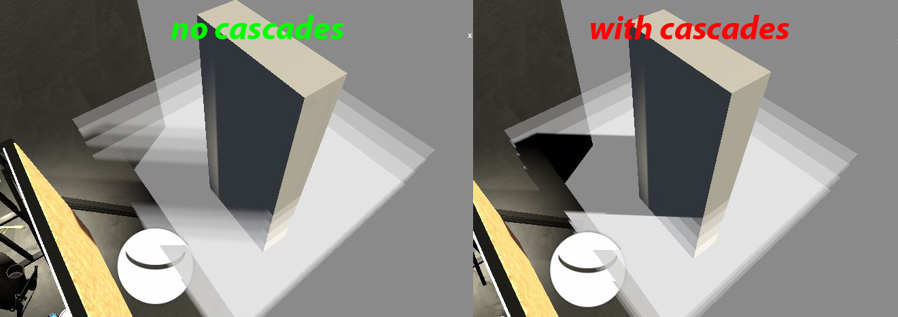

Shadow
- ShadowCaster패스로 그림자를 그려주고
- 메인 패스에서
- shadowCoord를 얻어와
- OUT.shadowCoord = TransformWorldToShadowCoord(OUT.positionWS);로
- 라이트를 얻고
- Light mainLight = GetMainLight(inputData.shadowCoord);
- 그림자를 적용시킨다
- half shadow = mainLight.shadowAttenuation;
- finalColor.rgb *= shadow;
- shadowCoord를 얻어와
// Light & Shadow
#pragma multi_compile _ _MAIN_LIGHT_SHADOWS
#pragma multi_compile _ _MAIN_LIGHT_SHADOWS_CASCADE
#pragma multi_compile _ _ADDITIONAL_LIGHTS
#pragma multi_compile _ _ADDITIONAL_LIGHTS_CASCADE
#pragma multi_compile _ _SHADOWS_SOFT
UnityEngine.Rendering.Universal.ShaderKeywordStrings
// com.unity.render-pipelines.universal/ShaderLibrary/Shadows.hlsl
float4 TransformWorldToShadowCoord(float3 positionWS)
{
#ifdef _MAIN_LIGHT_SHADOWS_CASCADE
half cascadeIndex = ComputeCascadeIndex(positionWS);
#else
half cascadeIndex = half(0.0);
#endif
float4 shadowCoord = mul(_MainLightWorldToShadow[cascadeIndex], float4(positionWS, 1.0));
return float4(shadowCoord.xyz, 0);
}
OUT.shadowCoord = TransformWorldToShadowCoord(positionWS);// float4
VertexPositionInputs vertexInput = GetVertexPositionInputs(v.vertex.xyz);
OUT.shadowCoord = GetShadowCoord(vertexInput);
Light mainLight = GetMainLight(inputData.shadowCoord);
half shadow = mainLight.shadowAttenuation;
finalColor.rgb *= shadow;
아 유니티 병신같은 문서어딧
// Toggle the alpha test
#define _ALPHATEST_ON
// Toggle fog on transparent
#define _ENABLE_FOG_ON_TRANSPARENT
UsePass "Universal Render Pipeline/Lit/ShadowCaster"
com.unity.render-pipelines.universal/Shaders/ShadowCasterPass.hlsl
// You can also optionally disable shadow receiving for transparent to improve performance. To do so, disable Transparent Receive Shadows in the Forward Renderer asset
_MAIN_LIGHT_SHADOWS _MAIN_LIGHT_SHADOWS_CASCADE _MAIN_LIGHT_SHADOWS_SCREEN ?? => MAIN_LIGHT_CALCULATE_SHADOWS
_MAIN_LIGHT_SHADOWS_CASCADE => REQUIRES_VERTEX_SHADOW_COORD_INTERPOLATOR
_ADDITIONAL_LIGHT_SHADOWS => ADDITIONAL_LIGHT_CALCULATE_SHADOWS
// cascade
// https://forum.unity.com/threads/what-does-shadows_screen-mean.568225/
// https://forum.unity.com/threads/water-shader-graph-transparency-and-shadows-universal-render-pipeline-order.748142/
PipelineAsset> Shadows > Cascades> No Cascades

// com.unity.render-pipelines.universal/ShaderLibrary/Shadows.hlsl
#if !defined(_RECEIVE_SHADOWS_OFF)
#if defined(_MAIN_LIGHT_SHADOWS) || defined(_MAIN_LIGHT_SHADOWS_CASCADE) || defined(_MAIN_LIGHT_SHADOWS_SCREEN)
#define MAIN_LIGHT_CALCULATE_SHADOWS
#if !defined(_MAIN_LIGHT_SHADOWS_CASCADE)
#define REQUIRES_VERTEX_SHADOW_COORD_INTERPOLATOR
#endif
#endif
#if defined(_ADDITIONAL_LIGHT_SHADOWS)
#define ADDITIONAL_LIGHT_CALCULATE_SHADOWS
#endif
#endif
TEXTURE2D_SHADOW(_MainLightShadowmapTexture);
SAMPLER_CMP(sampler_MainLightShadowmapTexture);
half4 _MainLightShadowParams; // (x: shadowStrength, y: 1.0 if soft shadows, 0.0 otherwise, z: main light fade scale, w: main light fade bias)
float4 _MainLightShadowmapSize; // (xy: 1/width and 1/height, zw: width and height)
struct ShadowSamplingData
{
half4 shadowOffset0;
half4 shadowOffset1;
half4 shadowOffset2;
half4 shadowOffset3;
float4 shadowmapSize;
};
// ShadowParams
// x: ShadowStrength
// y: 1.0 if shadow is soft, 0.0 otherwise
half4 GetMainLightShadowParams()
{
return _MainLightShadowParams;
}
half MainLightRealtimeShadow(float4 shadowCoord)
ShadowSamplingData shadowSamplingData = GetMainLightShadowSamplingData();
half4 shadowParams = GetMainLightShadowParams();
return SampleShadowmap(TEXTURE2D_ARGS(_MainLightShadowmapTexture, sampler_MainLightShadowmapTexture), shadowCoord, shadowSamplingData, shadowParams, false);
half AdditionalLightRealtimeShadow(int lightIndex, float3 positionWS, half3 lightDirection)
real SampleShadowmap(TEXTURE2D_SHADOW_PARAM(ShadowMap, sampler_ShadowMap), float4 shadowCoord, ShadowSamplingData samplingData, half4 shadowParams, bool isPerspectiveProjection = true) _SHADOWS_SOFT
PipelineAsset> Shadows > Cascades> Soft Shadows
_SHADOWS_SOFT : real SampleShadowmapFiltered(TEXTURE2D_SHADOW_PARAM(ShadowMap, sampler_ShadowMap), float4 shadowCoord, ShadowSamplingData samplingData)
float4 TransformWorldToShadowCoord(float3 positionWS) : _MAIN_LIGHT_SHADOWS_CASCADE
_MAIN_LIGHT_SHADOWS_CASCADE : half ComputeCascadeIndex(float3 positionWS)
float3 ApplyShadowBias(float3 positionWS, float3 normalWS, float3 lightDirection)
LerpWhiteTo
#pragma multi_compile_fog
OUT.fogCoord = ComputeFogFactor(OUT.positonHCS.z);
half3 ambient = SampleSH(IN.N);
finalColor.rgb *= ambient;
finalColor.rgb = MixFog(finalColor.rgb, IN.fogCoord);
ShadowAttenuation
// URP
half4 shadowCoord = TransformWorldToShadowCoord(positionWS);
// or
// VertexPositionInputs vertexInput = GetVertexPositionInputs(IN.positionOS.xyz);
// half4 shadowCoord = GetShadowCoord(vertexInput);
half shadowAttenuation = MainLightRealtimeShadow(shadowCoord);
// or
// ShadowSamplingData shadowSamplingData = GetMainLightShadowSamplingData();
// half4 shadowParams = GetMainLightShadowParams();
// half shadowAttenuation = SampleShadowmap(TEXTURE2D_ARGS(_MainLightShadowmapTexture, sampler_MainLightShadowmapTexture), shadowCoord, shadowSamplingData, shadowParams, false);
// or
// Light mainLight = GetMainLight(i.shadowCoord);
// half shadowAttenuation = mainLight.shadowAttenuation;
ShadowCaster
// 그림자 그려주는놈
Pass
{
Tags{"LightMode" = "ShadowCaster"}
}
vert()
{
OUT.positionCS = TransformWorldToHClip(ApplyShadowBias(positionWS, normalWS, lightDirectionWS));
}
frag()
{
1 : lit
0 : shadow
return 1 or 0;
}
Pass
{
Name "ShadowCaster"
Tags
{
"LightMode" = "ShadowCaster"
}
ZWrite On
Cull Back
HLSLPROGRAM
#pragma target 3.5
#pragma vertex shadowVert
#pragma fragment shadowFrag
#include "Packages/com.unity.render-pipelines.core/ShaderLibrary/Common.hlsl" // real
#include "Packages/com.unity.render-pipelines.core/ShaderLibrary/CommonMaterial.hlsl" // LerpWhiteTo
#include "Packages/com.unity.render-pipelines.universal/ShaderLibrary/Core.hlsl"
#include "Packages/com.unity.render-pipelines.universal/ShaderLibrary/Shadows.hlsl" // ApplyShadowBias
struct Attributes
{
float4 positionOS : POSITION;
float4 normal : NORMAL;
};
struct Varyings
{
float4 positionHCS : SV_POSITION;
};
Varyings shadowVert(Attributes IN)
{
Varyings OUT = (Varyings)0;
float3 positionWS = TransformObjectToWorld(IN.positionOS.xyz);
float3 normalWS = TransformObjectToWorldNormal(IN.normal.xyz);
OUT.positionHCS = TransformWorldToHClip(ApplyShadowBias(positionWS, normalWS, _MainLightPosition.xyz));
return OUT;
}
half4 shadowFrag(Varyings IN) : SV_Target
{
return 0;
}
ENDHLSL
}
#include "Packages/com.unity.render-pipelines.core/ShaderLibrary/Common.hlsl" // real
#if defined(SHADER_API_MOBILE) || defined(SHADER_API_SWITCH)
#define HAS_HALF 1
#else
#define HAS_HALF 0
#endif
#if REAL_IS_HALF
#define real half
#define real2 half2
#define real3 half3
#define real4 half4
#include "Packages/com.unity.render-pipelines.universal/ShaderLibrary/Shadows.hlsl" // ApplyShadowBias
float3 ApplyShadowBias(float3 positionWS, float3 normalWS, float3 lightDirection)
real SampleShadowmap(TEXTURE2D_SHADOW_PARAM(ShadowMap, sampler_ShadowMap), float4 shadowCoord, ShadowSamplingData samplingData, half4 shadowParams, bool isPerspectiveProjection = true)
// 안쓰는 놈인데.. LerpWhiteTo를 들고있다..
#include "Packages/com.unity.render-pipelines.core/ShaderLibrary/CommonMaterial.hlsl" // LerpWhiteTo
real LerpWhiteTo(real b, real t)
쉐도우맵
-
Z-depth구하기
-
씬 렌더링
-
Z-depth를 깊이버퍼에 저장한다(depth map)
world > View[Light] > Proj[Light] Light's View Matrix > Light's Projection Matrix > transform NDC > transform texture Space
-
-
그림자그리기
-
씬 렌더링
-
깊이버퍼랑 Z-depth 테스트
if (fragment Z-depth > sampled Z-depth) { shadow : 0 } else { lit : 1 }
-
-
SSSM(Screen Space Shadow Map)
-
Unity Shader - Custom SSSM(Screen Space Shadow Map) 自定义屏幕空间阴影图
Shadow Acne
DepthOnly
Pass
{
Tags
{
"LightMode" = "DepthOnly"
}
ZWrite On
ColorMask 0
HLSLPROGRAM
...
half4 shadowFrag(Varyings IN) : SV_Target
{
return 0;
}
ENDHLSL
}
Meta
- 라이트맵 구울때 사용.
- 디버깅용 내부툴 만들때 유용.
Pass
{
Tags
{
"LightMode" = "DepthOnly"
}
...
}